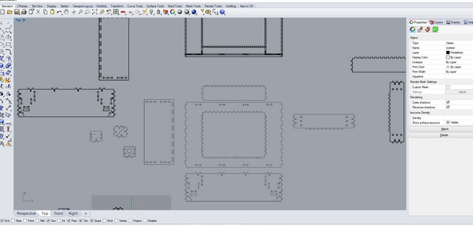
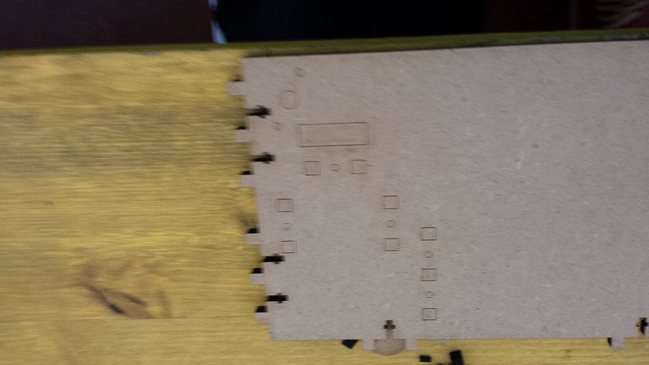

Final project - Structure
In this section I explain the building ad design of the structural part of my final project.
The structure of the final project is a sort of "border" of chest of drawers for small part, so it thought for fit the desired size of this drawers.
I buy for 3 Euro each one two of this small drawers storage.
All the measure can be taken from the file cad i leave at the end of the page.
I use a 2D modelling in Rhino to build a structure who will be also press-fit and sustained by screw.
I use different pattern of fit and different profile of fit and screw to align the 2 part.
The align is important because I have to make a moving system in this structure so I need the hole for the rod to be more parallel as possible.
The space left in the border is for give to the motion system the space to reach al the drawers whit the actuator.
The result of this space can be seen in the other section of final project where i describe the motion system.
I also make a frontal frame to gave to the structure a nice rigidity, otherwise the structure will flex along the corner because it didn't have perpendicular bond.
this frame is fixed in 3 different way at the other pieces:
-only press fit
-screw and aligning element
-pockets and dowels
after the 2D design is finished and before cut all the part, I make a 3D rendering and presentation to be sure all the part will fit correctly whit the other, and also to control if all the thickens of the material who will be made of are right considered.

When all fit in the 3D render is time to cut the frame whit the laser cutter.
I use a cheap 4 Euro 6mm thick 60x90 MDF sheet and another piece for the last top part( about 20x40 piece of MDF 6mm that I have find in the lab).
The MDF is quite hard for the laser to be cut and I also have do adapt the focus of the laser in all part of MDF sheet because is a little curved, so I cut the part separately every time.
The line red will be cut last so the piece remain fixed to the sheet until the end of the process.
Before i make some try to tune the power and speed of the laser, it will be 1 of speed and 100% power in a 60W CO2 laser.

During the process something strange happened so the laser didn't cut some hole , fortunately I keep the frame of the sheet so I have to reposition it and put the part inside and perform another cut.
The laser cut MDF is really dirty along the cut so is better to clean it a little.

Now is the assembly time. I gave attention during the design process to not build a "not possible assembly" structure that will only be assembled in one time(or in the cad), so i follow the step i have in my mind, follow the photo.
The final structure seems really solid ( a little heavy due to the material) but it is enough strength to support all the force and the tension that i need.
This structure can be adjusted to the desired dimension, it is simple and the bigger that is the less space take the border for the motion.
Download the 2D and 3D render of the structure